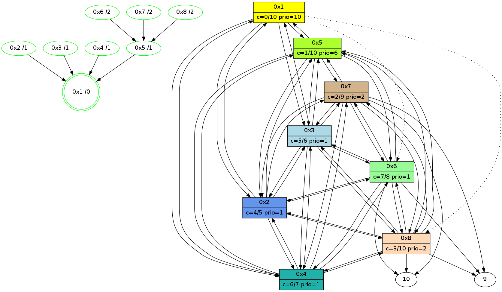

>> << IDX [start] -100 -25 -5 +0 +5 +25 [455.668059826]
 Previous packets
----------------------------------------------------------------------
450.126169 beacon01(11f6) #0 coord=01,02,03,04,05,06,07,08,0a,09 cycle=1008.0ms assoc
-- color-indic=0 64 b2 f4
450.136336 beacon02(11f6) #0 coord=01,02,03,04,05,06,07,08,0a,09 cycle=1008.0ms assoc 64 21 c5
450.146305 beacon03(11f6) #0 coord=01,02,03,04,05,06,07,08,0a,09 cycle=1008.0ms assoc 64 5b 88
450.156304 beacon04(11f6) #0 coord=01,02,03,04,05,06,07,08,0a,09 cycle=1008.0ms assoc 64 2c 62
450.166305 beacon05(11f6) #0 coord=01,02,03,04,05,06,07,08,0a,09 cycle=1008.0ms assoc 64 56 2f
450.176305 beacon06(11f6) #0 coord=01,02,03,04,05,06,07,08,0a,09 cycle=1008.0ms assoc 64 d8 f8
450.186306 beacon07(11f6) #0 coord=01,02,03,04,05,06,07,08,0a,09 cycle=1008.0ms assoc 64 a2 b5
450.196310 beacon08(11f6) #0 coord=01,02,03,04,05,06,07,08,0a,09 cycle=1008.0ms assoc 64 27 24
450.298515 [Hello(6): seq=227 sym=10,7,5,3,8,4,2,9 color=7 sysInfo=hasWarning,MaxColorIndicationCalled,ColoringModeIndicationCalled,MaxColorResponseCalled stat=10:3,10,4,7/7:15,15,12,10/5:7,14,13,2/3:11,0,12,13/8:5,1,10,3/4:15,0,5,12/2:5,15,10,11/9:4,14,11,3]
450.303331 [Hello(7): seq=227 sym=10,5,6,8,3,2,4,9 color=2 sysInfo=hasWarning,MaxColorIndicationCalled,ColoringModeIndicationCalled,MaxColorResponseCalled stat=10:6,10,7,8/5:12,0,13,2/6:13,1,11,12/8:7,1,10,3/3:4,15,12,12/2:5,15,9,11/4:7,15,3,10/9:1,0,12,3]
450.312491 [Hello(5): seq=227 sym=1,2,7,6,3,8,4 color=1 sysInfo=hasWarning,MaxColorIndicationCalled,ColoringModeIndicationCalled,MaxColorResponseCalled stat=1:3,0,14,0/2:6,1,12,13/7:7,14,12,10/6:4,1,11,12/3:9,0,13,12/8:4,15,8,2/4:9,1,10,12]
450.329915 [Hello(2): seq=227 sym=1,7,5,3,8,4,6 color=4 sysInfo=hasWarning,MaxColorIndicationCalled,ColoringModeIndicationCalled,MaxColorResponseCalled stat=1:2,1,14,0/7:3,14,12,10/5:5,1,13,2/3:5,0,10,11/8:3,0,8,2/4:7,15,11,13/6:12,1,11,12]
450.333431 [Hello(3): seq=227 sym=1,2,7,5,6,8,4 color=5 sysInfo=hasWarning,MaxColorIndicationCalled,ColoringModeIndicationCalled,MaxColorResponseCalled stat=1:3,1,14,0/2:6,0,11,14/7:4,14,12,9/5:3,1,10,2/6:0,1,12,12/8:3,0,8,2/4:10,0,12,13]
450.338123 [Hello(8): seq=227 sym=2,7,5,6,3,4,10,9 color=3 sysInfo=MaxColorIndicationCalled,ColoringModeIndicationCalled,MaxColorResponseCalled stat=2:1,15,11,13/7:0,15,12,10/5:12,0,12,2/6:14,0,10,11/3:5,15,9,12/4:7,0,9,12/10:4,10,4,7/9:9,14,4,2]
450.370479 [Hello(4): seq=227 sym=1,2,5,6,3,8,7 color=6 sysInfo=MaxColorIndicationCalled,ColoringModeIndicationCalled,MaxColorResponseCalled stat=1:2,0,15,0/2:7,1,12,13/5:12,14,13,2/6:2,0,12,12/3:12,0,10,11/8:5,0,7,2/7:10,14,12,10]
----------------------------------------------------------------------
451.234547 beacon01(11f6) #0 coord=01,02,03,04,05,06,07,08,0a,09 cycle=1008.0ms assoc
-- color-indic=0 64 0e f1
451.244711 beacon02(11f6) #0 coord=01,02,03,04,05,06,07,08,0a,09 cycle=1008.0ms assoc 64 9d c0
451.254682 beacon03(11f6) #0 coord=01,02,03,04,05,06,07,08,0a,09 cycle=1008.0ms assoc 64 e7 8d
451.264683 beacon04(11f6) #0 coord=01,02,03,04,05,06,07,08,0a,09 cycle=1008.0ms assoc 64 90 67
451.274682 beacon05(11f6) #0 coord=01,02,03,04,05,06,07,08,0a,09 cycle=1008.0ms assoc 64 ea 2a
451.284685 beacon06(11f6) #0 coord=01,02,03,04,05,06,07,08,0a,09 cycle=1008.0ms assoc 64 64 fd
451.294684 beacon07(11f6) #0 coord=01,02,03,04,05,06,07,08,0a,09 cycle=1008.0ms assoc 64 1e b0
451.304687 beacon08(11f6) #0 coord=01,02,03,04,05,06,07,08,0a,09 cycle=1008.0ms assoc 64 9b 21
451.386768 [Hello(1): seq=228 sym=5,3,2,4 asym=8,6 color=0/10 sysInfo=hasWarning,MaxColorIndicationCalled,MaxColorResponseCalled,MaxColorRequestCalled,ColoringModeRequestCalled stat=5:6,0,14,2/3:12,0,13,13/2:7,0,12,14/4:11,1,12,14/8:8,0,8,2/6:7,1,11,12]
----------------------------------------------------------------------
452.342924 beacon01(11f6) #0 coord=01,02,03,04,05,06,07,08,0a,09 cycle=1008.0ms assoc
-- color-indic=0 64 ca ff
452.353094 beacon02(11f6) #0 coord=01,02,03,04,05,06,07,08,0a,09 cycle=1008.0ms assoc 64 59 ce
452.363059 beacon03(11f6) #0 coord=01,02,03,04,05,06,07,08,0a,09 cycle=1008.0ms assoc 64 23 83
452.373059 beacon04(11f6) #0 coord=01,02,03,04,05,06,07,08,0a,09 cycle=1008.0ms assoc 64 54 69
452.383059 beacon05(11f6) #0 coord=01,02,03,04,05,06,07,08,0a,09 cycle=1008.0ms assoc 64 2e 24
452.393061 beacon06(11f6) #0 coord=01,02,03,04,05,06,07,08,0a,09 cycle=1008.0ms assoc 64 a0 f3
452.403060 beacon07(11f6) #0 coord=01,02,03,04,05,06,07,08,0a,09 cycle=1008.0ms assoc 64 da be
452.413065 beacon08(11f6) #0 coord=01,02,03,04,05,06,07,08,0a,09 cycle=1008.0ms assoc 64 5f 2f
452.461562 [Hello(3): seq=228 sym=1,2,7,5,6,8,4 color=5 sysInfo=hasWarning,MaxColorIndicationCalled,ColoringModeIndicationCalled,MaxColorResponseCalled stat=1:4,1,14,0/2:7,0,11,14/7:4,14,12,9/5:3,1,10,2/6:0,1,12,12/8:4,0,8,2/4:11,0,12,13]
452.500573 [Hello(8): seq=228 sym=2,7,5,6,3,4,10,9 color=3 sysInfo=MaxColorIndicationCalled,ColoringModeIndicationCalled,MaxColorResponseCalled stat=2:1,15,11,13/7:0,15,12,10/5:12,0,12,2/6:14,0,10,11/3:7,15,9,12/4:8,0,9,12/10:5,10,5,7/9:9,14,4,2]
452.515556 [Hello(5): seq=228 sym=1,2,7,6,3,8,4 color=1 sysInfo=hasWarning,MaxColorIndicationCalled,ColoringModeIndicationCalled,MaxColorResponseCalled stat=1:4,0,14,0/2:7,1,12,13/7:7,14,12,10/6:4,1,11,12/3:11,0,13,12/8:6,15,8,2/4:10,1,10,12]
452.527581 [Hello(7): seq=228 sym=10,5,6,8,3,2,4,9 color=2 sysInfo=hasWarning,MaxColorIndicationCalled,ColoringModeIndicationCalled,MaxColorResponseCalled stat=10:7,10,8,8/5:14,0,13,2/6:14,1,11,12/8:9,1,10,3/3:6,15,12,12/2:6,15,9,11/4:8,15,3,10/9:3,0,12,3]
452.532407 [Hello(4): seq=228 sym=1,2,5,6,3,8,7 color=6 sysInfo=MaxColorIndicationCalled,ColoringModeIndicationCalled,MaxColorResponseCalled stat=1:3,0,15,0/2:7,1,12,13/5:13,14,13,2/6:2,0,12,12/3:13,0,10,11/8:6,0,7,2/7:10,14,12,10]
452.537318 [Hello(6): seq=228 sym=10,7,5,3,8,4,2,9 color=7 sysInfo=hasWarning,MaxColorIndicationCalled,ColoringModeIndicationCalled,MaxColorResponseCalled stat=10:4,10,5,7/7:1,15,12,10/5:8,14,13,2/3:13,0,12,13/8:7,1,10,3/4:1,0,5,12/2:6,15,10,11/9:6,14,11,3]
452.585369 [Hello(2): seq=228 sym=1,7,5,3,8,4,6 color=4 sysInfo=hasWarning,MaxColorIndicationCalled,ColoringModeIndicationCalled,MaxColorResponseCalled stat=1:3,1,14,0/7:4,14,12,10/5:6,1,13,2/3:7,0,10,11/8:5,0,8,2/4:9,15,11,13/6:13,1,11,12]
452.594927 [STC(1) #0.32 new-neigh,stable,to-color d=0]
----------------------------------------------------------------------
453.451304 beacon01(11f6) #0 coord=01,02,03,04,05,06,07,08,0a,09 cycle=1008.0ms assoc
-- color-indic=0 64 76 fa
453.461477 beacon02(11f6) #0 coord=01,02,03,04,05,06,07,08,0a,09 cycle=1008.0ms assoc 64 e5 cb
453.471438 beacon03(11f6) #0 coord=01,02,03,04,05,06,07,08,0a,09 cycle=1008.0ms assoc 64 9f 86
453.481438 beacon04(11f6) #0 coord=01,02,03,04,05,06,07,08,0a,09 cycle=1008.0ms assoc 64 e8 6c
453.491442 beacon05(11f6) #0 coord=01,02,03,04,05,06,07,08,0a,09 cycle=1008.0ms assoc 64 92 21
453.501440 beacon06(11f6) #0 coord=01,02,03,04,05,06,07,08,0a,09 cycle=1008.0ms assoc 64 1c f6
453.511440 beacon07(11f6) #0 coord=01,02,03,04,05,06,07,08,0a,09 cycle=1008.0ms assoc 64 66 bb
453.521443 beacon08(11f6) #0 coord=01,02,03,04,05,06,07,08,0a,09 cycle=1008.0ms assoc 64 e3 2a
453.605155 [Hello(1): seq=229 sym=5,3,2,4 asym=8,6 color=0/10 sysInfo=hasWarning,MaxColorIndicationCalled,MaxColorResponseCalled,MaxColorRequestCalled,ColoringModeRequestCalled stat=5:7,0,14,2/3:13,0,13,13/2:8,0,12,14/4:12,1,12,14/8:9,0,8,2/6:8,1,11,12]
453.625121 [STC(5)->1 #0.32 new-neigh,stable,to-color d=1]
453.632366 [STC(3)->1 #0.32 new-neigh,stable,to-color d=1]
453.643391 [STC(4)->1 #0.32 new-neigh,stable,to-color d=1]
453.653048 [STC(6)->5-.->1 #0.32 new-neigh,stable,to-color d=2]
453.660520 [STC(2)->1 #0.32 new-neigh,stable,to-color d=1]
453.662715 [STC(8)->5-.->1 #0.32 new-neigh,stable,to-color d=2]
453.667416 [STC(7)->5-.->1 #0.32 new-neigh,stable,to-color d=2]
----------------------------------------------------------------------
454.559679 beacon01(11f6) #0 coord=01,02,03,04,05,06,07,08,0a,09 cycle=1008.0ms assoc
-- color-indic=0 64 42 e2
454.569826 beacon02(11f6) #0 coord=01,02,03,04,05,06,07,08,0a,09 cycle=1008.0ms assoc 64 d1 d3
454.579814 beacon03(11f6) #0 coord=01,02,03,04,05,06,07,08,0a,09 cycle=1008.0ms assoc 64 ab 9e
454.589815 beacon04(11f6) #0 coord=01,02,03,04,05,06,07,08,0a,09 cycle=1008.0ms assoc 64 dc 74
454.599816 beacon05(11f6) #0 coord=01,02,03,04,05,06,07,08,0a,09 cycle=1008.0ms assoc 64 a6 39
454.609815 beacon06(11f6) #0 coord=01,02,03,04,05,06,07,08,0a,09 cycle=1008.0ms assoc 64 28 ee
454.619816 beacon07(11f6) #0 coord=01,02,03,04,05,06,07,08,0a,09 cycle=1008.0ms assoc 64 52 a3
454.629819 beacon08(11f6) #0 coord=01,02,03,04,05,06,07,08,0a,09 cycle=1008.0ms assoc 64 d7 32
454.671991 [Hello(3): seq=229 sym=1,2,7,5,6,8,4 color=5 sysInfo=hasWarning,MaxColorIndicationCalled,ColoringModeIndicationCalled,MaxColorResponseCalled stat=1:5,1,15,0/2:8,0,12,14/7:5,14,13,9/5:4,1,11,2/6:1,1,13,12/8:5,0,9,2/4:12,0,13,13]
454.693316 [Hello(2): seq=229 sym=1,7,5,3,8,4,6 color=4 sysInfo=hasWarning,MaxColorIndicationCalled,ColoringModeIndicationCalled,MaxColorResponseCalled stat=1:4,1,15,0/7:4,14,13,10/5:6,1,14,2/3:8,0,11,11/8:5,0,9,2/4:9,15,12,13/6:13,1,12,12]
454.720348 [Hello(6): seq=229 sym=10,7,5,3,8,4,2,9 color=7 sysInfo=hasWarning,MaxColorIndicationCalled,ColoringModeIndicationCalled,MaxColorResponseCalled stat=10:6,10,6,7/7:1,15,13,10/5:8,14,14,2/3:14,0,13,13/8:7,1,11,3/4:1,0,6,12/2:8,15,10,11/9:6,14,12,3]
454.724453 [Hello(7): seq=229 sym=10,5,6,8,3,2,4,9 color=2 sysInfo=hasWarning,MaxColorIndicationCalled,ColoringModeIndicationCalled,MaxColorResponseCalled stat=10:9,10,9,8/5:14,0,14,2/6:0,1,12,12/8:9,1,11,3/3:7,15,13,12/2:8,15,10,11/4:8,15,3,10/9:3,0,13,3]
454.727658 [Hello(5): seq=229 sym=1,2,7,6,3,8,4 color=1 sysInfo=hasWarning,MaxColorIndicationCalled,ColoringModeIndicationCalled,MaxColorResponseCalled stat=1:5,0,15,0/2:9,1,13,13/7:8,14,13,10/6:6,1,12,12/3:12,0,14,12/8:6,15,9,2/4:11,1,11,12]
454.764052 [Hello(8): seq=229 sym=2,7,5,6,3,4,10,9 color=3 sysInfo=MaxColorIndicationCalled,ColoringModeIndicationCalled,MaxColorResponseCalled stat=2:3,15,11,13/7:2,15,13,10/5:14,0,13,2/6:0,0,11,11/3:8,15,10,12/4:9,0,10,12/10:7,10,5,7/9:10,14,5,2]
454.779062 [Hello(4): seq=229 sym=1,2,5,6,3,8,7 color=6 sysInfo=MaxColorIndicationCalled,ColoringModeIndicationCalled,MaxColorResponseCalled stat=1:4,0,0,0/2:9,1,13,13/5:14,14,14,2/6:4,0,13,12/3:14,0,11,11/8:7,0,8,2/7:12,14,13,10]